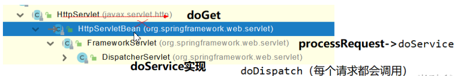
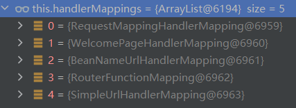

Controller中每个请求都是通过请求映射实现的，这里简单记录请求映射的基本原理。
PART1
找到 doGet() 查看继承树，我们得到了如下的内容

PART2
可知SpringMVC功能分析都从 org.springframework.web.servlet.DispatcherServlet –> doDispatch() 方法开始的
查看 doDispatch() 方法
1 | protected void doDispatch(HttpServletRequest request, HttpServletResponse response) throws Exception { |
这里的HandlerMapping：处理器映射。/xxx->>xxxx
PART3
我们用debug跟进发现共有5个HandlerMapping

其中，RequestMappingHandlerMapping：保存了所有@RequestMapping 和handler的映射规则。这就是我们在Controlller 里面写的 @RequestMapping 注解。
WelcomePageHandlerMapping：完成了欢迎页的映射
程序会遍历所有编写的请求，然后将所有的请求映射都在HandlerMapping中。
处理请求的流程：
- SpringBoot自动配置欢迎页的 WelcomePageHandlerMapping 。访问 /能访问到index.html；
- SpringBoot自动配置了默认 的 RequestMappingHandlerMapping
- 请求进来，挨个尝试所有的HandlerMapping看是否有请求信息。
- 如果有就找到这个请求对应的handler
- 如果没有就是下一个 HandlerMapping
PS：我们需要一些自定义的映射处理，我们也可以自己给容器中放HandlerMapping。自定义 HandlerMapping